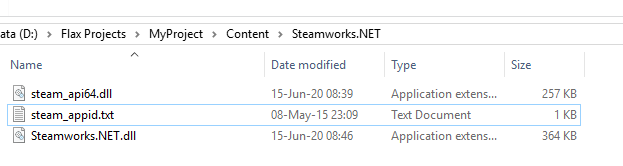

HOWTO: Use third-party library
Flax supports using external libraries, third-party code, and SDKs in the game scripts. There are several ways to achieve this depending on the desired functionality:
- you can directly reference the pre-build build libraries
- you can integrate external code building with Flax.Build scripts
- you can implement code modules with library (eg.
ThirdPartyModule,DepsModuleorHeaderOnlyModule) in build scripts.
In this documentation section, you will learn how to use a third-party library in C++ or C# scripts.
Using C# library
To add a reference to prebuild .Net DLL file in your game scripts simply modify the build script file (eg. Source/GameModule/MyGame.Build.cs) by adding the file reference in overridden Setup method:
// Reference C# DLL placed Content folder
options.ScriptingAPI.FileReferences.Add(Path.Combine(FolderPath, "..", "..", "Content", "JetBrains.Annotations.dll"));
Then generate scripts projects solution to use types from imported C# module inside game code.
This will work for scripts build for the editor and cooked game as the referenced assembly will be packaged. Build system will also copy relevant .pdb and .xml files if provided.
Remember that engine uses .Net Framework 4.5 (.Net Core API is not supported).
Using C++ library
To add a reference to the prebuild native library in your game scripts you need to modify the built environment of your game code module. It requires adding library header files location to includes search path and modification of the link environment to reference the given library. Also if you use a dynamic library you need to mark it as a dependency file to deploy during the build. To do so simply edit the build script file (eg. Source/GameModule/MyGame.Build.cs) in overridden Setup method:
var bcryptPath = Path.Combine(FolderPath, "..", "bcrypt");
options.CompileEnv.IncludePaths.Add(Path.Combine(bcryptPath, "include"));
options.LinkEnv.InputLibraries.Add(Path.Combine(bcryptPath, "lib", "bcrypt.lib"));
options.DependencyFiles.Add(Path.Combine(bcryptPath, "bin", "bcrypt.dll"));
You can also deploy debug symbols file and/or inform module C++ code with pre-processor define that can use a library:
options.OptionalDependencyFiles.Add(Path.Combine(bcryptPath, "bin", "bcrypt.pdb"));
options.CompileEnv.PreprocessorDefinitions.Add("USE_BCRYPT");
When developing a multiplatform game you can use options.Platform.Target and options.Toolchain.Architecture in build script to switch between platform and architecture (you might want to link against different files for different platforms).
Example case: Steamworks C# API with native dll
To understand referencing external libraries even better let's see how to use external Steamworks API from the native library with C# bindings. In this example, we will use Steamworks.NET project. You can download a prebuild released version and get files from the package (files from folder Windows-x64).
Firstly, copy library files into the project workspace so we can use them. You can place them in a Content/Steamworks.NET folder.

Next step is to modify the game code build script (eg. Source/GameModule/MyGame.Build.cs) to reference the library in overridden Setup method:
var steamworksPath = Path.Combine(FolderPath, "..", "..", "Content", "Steamworks.NET");
options.ScriptingAPI.FileReferences.Add(Path.Combine(steamworksPath, "Steamworks.NET.dll"));
options.DependencyFiles.Add(Path.Combine(steamworksPath, "steam_api64.dll"));
options.DependencyFiles.Add(Path.Combine(steamworksPath, "steam_appid.txt"));
Then, regenerate scripts project files and use Steamworks API in your C# scripts. It will work in Editor and Game. Here is an example script that initializes API:
using System;
using FlaxEngine;
using Steamworks;
public class Steam : Script
{
public override void OnStart()
{
if (!Packsize.Test())
{
Debug.LogError("[Steamworks.NET] Packsize Test returned false, the wrong version of Steamworks.NET is being run in this platform.");
return;
}
if (!DllCheck.Test())
{
Debug.LogError("[Steamworks.NET] DllCheck Test returned false, One or more of the Steamworks binaries seems to be the wrong version.");
return;
}
try
{
if (SteamAPI.RestartAppIfNecessary(AppId_t.Invalid))
{
Engine.RequestExit();
return;
}
}
catch (DllNotFoundException ex)
{
Debug.LogException(ex);
Debug.LogError("[Steamworks.NET] Could not load [lib]steam_api.dll/so/dylib. It's likely not in the correct location.");
Engine.RequestExit();
return;
}
var initialized = SteamAPI.Init();
if (!initialized)
{
Debug.LogError("[Steamworks.NET] SteamAPI_Init() failed.");
return;
}
}
}
To learn more see the libary website.